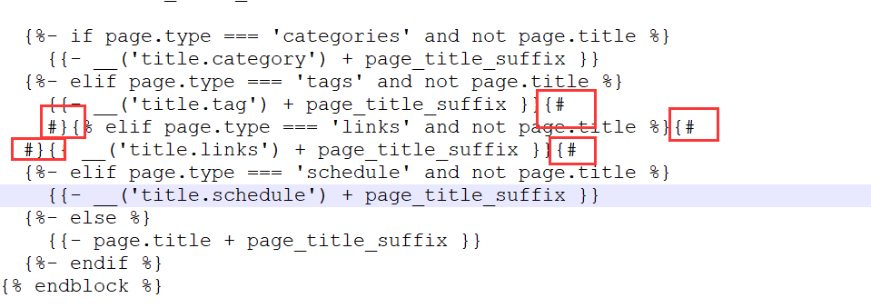

发现问题
在快乐的完善博客的时候，遇到了不快乐的事情，我的大部分菜单突然打开都是一片空白，像什么关于，标签，分类等等，(之前是好的，可能是由于瞎改了什么东西)如下图，打开我的标签页

真是神奇的一幕
排查错误
查看配置文件，查看md文件，都没有问题，删除这几个文件夹，重新生成一份也没有任何好转，然后查看hexo报错
1 | hexo s |

好嘛，原来是因为大括号的原因
确定错误
然后就找被我修改过的文件，终于确定了错误的地方
1 | layout/page.swig |

我也不知道为什么当时会加它们，但是把它们删掉后就没问题了
最后重新部署上传就好了
1 | hexo clean && hexo g |